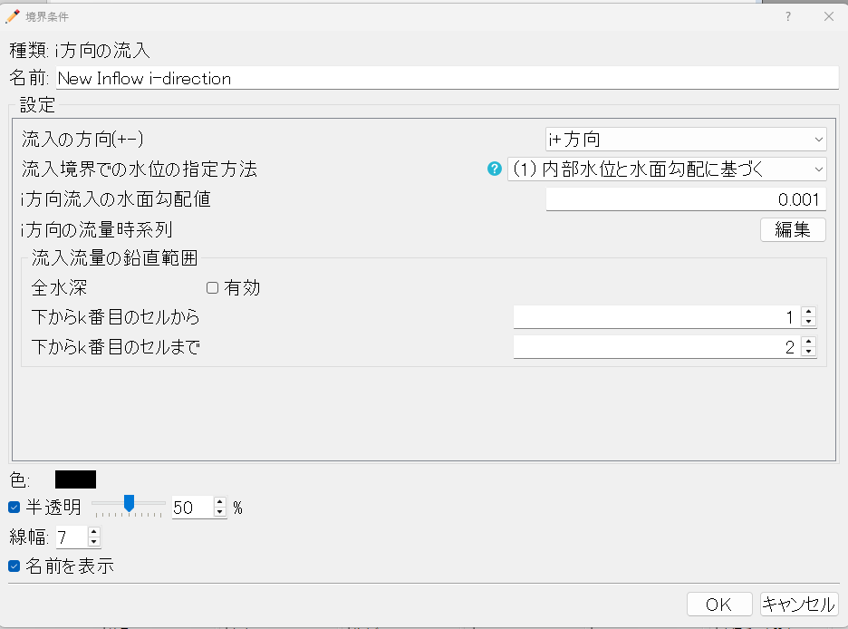
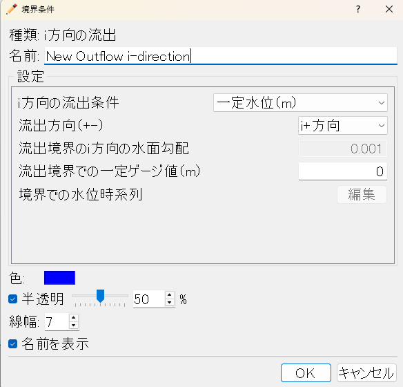
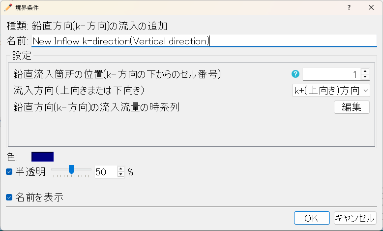
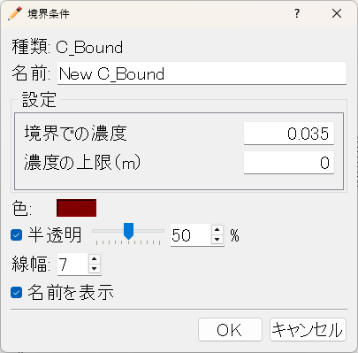

流入・流出・流量検査断面¶
対応バージョン: 2.0.20261007
ソルバータイプが「複合河川条件」のときに、流入・流出の境界を設定します。流量検査断面と C_Bound は、どちらのソルバータイプでも使えます。
流入（i方向・j方向）¶
格子の辺を選び、その辺から流量を流入させます。i方向の流入は i 一定の辺（格子の上下流方向の端）、j方向の流入は j 一定の辺（左右岸方向の端）に設定します。流量は時系列で与え、時間の単位は「計算領域および計算上の各種パラメータ」タブの「複合河川系における流量データの時間単位」で選びます。
i方向の流入¶

| 項目 | 説明 | 既定値 |
|---|---|---|
流入の方向(+-)inDirection_i |
流入する向きです。格子の i が増える向きに流入する場合は「i+方向」を選びます。 選択肢: i+方向／i-方向 |
i+方向 |
流入境界での水位の指定方法inWater_i |
流入境界の水位の決め方です。（1）は内部の水位と下の水面勾配から決め、初期に水がある場合に向きます。（2）は下の勾配での等流水深を与え、ドライから始める場合に向きます。 選択肢: （1）内部水位と水面勾配に基づく／（2）与えられた勾配の等流計算に基づく |
（1）内部水位と水面勾配に基づく |
i方向流入の水面勾配値slopeIn_i |
流入境界で水位・流入流速を決めるための水面勾配です。 | 0.001 |
i方向の流量時系列qIn_i |
流入流量の時系列（時刻と流量）です。時間の単位は「複合河川系における流量データの時間単位」で選びます。 | — |
流入流量の鉛直範囲¶
| 項目 | 説明 | 既定値 |
|---|---|---|
全水深fwd_i |
オンにすると全水深から流入させます。オフでは下の k の範囲のセルだけから流入させます。 | オン |
下からk番目のセルからkFrom_i |
流入させる範囲の、下から数えた最初のセル番号です。 表示される条件: 「全水深」が「オフ」 |
1 |
下からk番目のセルまでkTo_i |
流入させる範囲の、下から数えた最後のセル番号です。 表示される条件: 「全水深」が「オフ」 |
2 |
j方向の流入¶
| 項目 | 説明 | 既定値 |
|---|---|---|
流入の方向(+-)inDirection_j |
流入する向きです。格子の j が増える向きに流入する場合は「j+方向」を選びます。 選択肢: j+方向／j-方向 |
j+方向 |
j方向流入の水面勾配値slopeIn_j |
流入境界で水位・流入流速を決めるための水面勾配です。 | 0.001 |
j方向の流量時系列qIn_j |
流入流量の時系列（時刻と流量）です。 | — |
流入流量の鉛直範囲¶
| 項目 | 説明 | 既定値 |
|---|---|---|
全水深fwd_j |
オンにすると全水深から流入させます。オフでは下の k の範囲のセルだけから流入させます。 | オン |
下からk番目のセルからkFrom_j |
流入させる範囲の、下から数えた最初のセル番号です。 表示される条件: 「全水深」が「オフ」 |
1 |
下からk番目のセルまでkTo_j |
流入させる範囲の、下から数えた最後のセル番号です。 表示される条件: 「全水深」が「オフ」 |
2 |
流出（i方向・j方向）¶
格子の辺を選び、その辺から流出させます。
i方向の流出¶

| 項目 | 説明 | 既定値 |
|---|---|---|
i方向の流出条件outCondition_i |
流出境界の条件です。「壁条件」は流出させません。「自由流出」は下の水面勾配で水位を外挿します。「一定水位」「水位の時系列」は水位を与えます。 選択肢: 壁条件（ゼロフラックス）／自由流出（一定水面勾配）／一定水位（m）／水位（m）の時系列 |
一定水位（m） |
流出方向（+-）outDirection_i |
流出する向きです。格子の i が増える向きに流出する場合は「i+方向」を選びます。 選択肢: i+方向／i-方向 表示される条件: 「i方向の流出条件」≧1 |
i+方向 |
流出境界のi方向の水面勾配slopeOut_i |
「自由流出」のときの水面勾配です。 表示される条件: 「i方向の流出条件」が「自由流出（一定水面勾配）」 |
0.001 |
流出境界での一定ゲージ値（m）hConst_i |
「一定水位」のときの水位（m）です。 表示される条件: 「i方向の流出条件」が「一定水位（m）」 |
0 |
境界での水位時系列hOut_i |
「水位の時系列」のときの水位の時系列（時刻と水位）です。 表示される条件: 「i方向の流出条件」が「水位（m）の時系列」 |
— |
j方向の流出¶
| 項目 | 説明 | 既定値 |
|---|---|---|
j方向の流出条件outCondition_j |
流出境界の条件です。 選択肢: 壁条件（ゼロフラックス）／自由流出（一定水面勾配）／一定水位（m）／水位（m）の時系列 |
自由流出（一定水面勾配） |
流出方向（+-）outDirection_j |
流出する向きです。格子の j が増える向きに流出する場合は「j+方向」を選びます。 選択肢: j+方向／j-方向 表示される条件: 「j方向の流出条件」≧1 |
j+方向 |
流出境界のj方向の水面勾配slopeOut_j |
「自由流出」のときの水面勾配です。 表示される条件: 「j方向の流出条件」が「自由流出（一定水面勾配）」 |
0.001 |
流出境界での一定ゲージ値（m）hConst_j |
「一定水位」のときの水位（m）です。 表示される条件: 「j方向の流出条件」が「一定水位（m）」 |
0 |
境界での水位時系列hOut_j |
「水位の時系列」のときの水位の時系列です。 表示される条件: 「j方向の流出条件」が「水位（m）の時系列」 |
— |
鉛直方向（k方向）の流入¶
セルを選び、そのセルの指定した層から鉛直方向に流入させます。

| 項目 | 説明 | 既定値 |
|---|---|---|
鉛直流入箇所の位置(k-方向の下からのセル番号)Location_k |
鉛直方向の流入を与えるセルの、下から数えた番号です。1 が最下層、鉛直分割数が最上層です。 | 1 |
流入方向（上向きまたは下向き）inDirection_k |
流入の向き（上向き・下向き）です。 選択肢: k+(上向き)方向／k-(下向き)方向 |
k+(上向き)方向 |
鉛直方向(k-方向)の流入流量の時系列qIn_k |
鉛直方向の流入流量の時系列（時刻と流量）です。 | — |
流量検査断面¶
格子の辺を選び、その断面を通過する流量を計算結果に出力します。流れには影響しません。
i方向¶
| 項目 | 説明 | 既定値 |
|---|---|---|
流出方向（i+ または i-）Direction_i |
流量を数える向きです。この向きの流量を正として出力します。 選択肢: i+方向／i-方向 |
i+方向 |
j方向¶
| 項目 | 説明 | 既定値 |
|---|---|---|
流出方向（j+ または j-）Direction_j |
流量を数える向きです。この向きの流量を正として出力します。 選択肢: j+方向／j-方向 |
j+方向 |
C_Bound（境界の濃度）¶
密度流の計算で、境界から流入する水の濃度を与えます。境界の濃度の与え方は「濃度の初期・境界条件」タブで選びます。

| 項目 | 説明 | 既定値 |
|---|---|---|
境界での濃度b_con_val |
この境界から流入する水の濃度です。 | 0.035 |
濃度を与える上限標高（m）e_up_con_val |
上の濃度を与える高さの上限（標高, m）です。この標高以下のセルにだけ濃度を与えます。 | 0 |